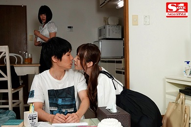

Chi đứng chết lặng bên ngoài cửa phòng tắm, toàn thân run lên bần bật, cô ghé mắt nhìn vào cảnh tượng ghê gớm đang diễn ra ở bên trong giữa anh Trung với nhỏ Quỳnh, người bạn gái thân thiết của nàng.
Họ trần truồng như hai con nhộng và đang hì hục làm tình, không hề nghĩ rằng bên ngoài của phòng tắm còn có Chi hiện diện bất ngờ và nàng nhìn họ không sốt một động tác ái ân đang diễn ra mê mệt giữa hai người.
Nhỏ Qùynh trông như người không còn hồn phách, nó ngồi dạng hai chân ra cho anh Trung khom người gục mặt vào bộ phận sinh dục của nó mà mút ra mút vào nghe chùn chụt khiến cho Chi chỉ muốn mau bỏ chạy nhưng hai bàn chân của cô eứ như có sức mạnh vô hình chôn đứng cô lại, cô run lên từng chập tưởng như không còn có thể đứng vững. Cặp ngực của Quỳnh thường ngày no tròn trông đẹp mắt và thật vô tư lự bây giờ nó đang cương thắng lên hồng hào ngạo nghễ với hai cái núm vú săn chắc màu tươi như cục gôm của cây bút chì.
Toàn thân Quỳnh nẩy bật lên từng chập vào mỗi lần cái miệng anh Trung nhả ra bập vào bên dưới âm hộ của nó. Gương mặt của Quỳnh ửng lên như người say men rượu và nhăn nhúm lại trông thật khó coi, y như nó đang chịu đựng một cực hình của sự thống khoái cùng cực. Hai cặp vú non tròn của nó rung lên từng chập như nó đang ngồi ở giữa nơi động đất.
Hai tay nó quơ cào trong không gian vô thức, lúc thì vịn chặt lấy cạnh bàn rửa mặt, lúc nó vò xoắn lên đầu tóc anh Trung như đang vò một nùi giẻ, có lúc nó tự đưa lên xoa bóp trên từng cái vú của mình hoặc để những ngón tay vào miệng mà tự mút ngon lành. Khuôn mặt nó trở nên đê mê man dại khác thường và đôi mắt thì hm dim nhắm chặt lại như không còn biết đến điều gì ở chung quanh. Nhỏ Quỳnh có cặp chân rất dài và đầy đặn, nó đang oằn người lại quặp chặt lấy tấm lưng chắc nịch của anh Trung. Nó rên lên liên hồi.

Bỗng thình lình anh Trung đứng lên bế thốc lấy người của Quỳnh đi ra đặt nó trên mặt giường ở phòng ngoài, làm cho Chi giật mình hoảng hốt, chỉ chậm trễ chút xíu là bị anh Trung trông thấy. Chi hốt hoảng lủi vội ra nhà ngoài mà nghe như trong lòng nửa như muốn mau trốn chạy, nửa như vẫn còn muốn xem tiếp những pha cụp lạc của con bạn thân với người anh họ mà từ bao lâu nay Chi vừa thầm thương mến vừa kính trọng, và lúc nào nàng cũng khép nép giữ gìn, không bao giờ dám tỏ ra cợt nhả trước mặt anh.
Hôm nay Chi đến nhà anh Trung học đàn, nhưng lại sớm hơn thường lệ để rồi bỗng nhiên chứng kiến hình ảnh nóng cháy này, Chi không thể nào ngăn được những bồi hồi xao xuyến cùng những cảm giác đê mê rạo rực kháe thường mà chưa bao giờ trong đời một thiếu nữ mới vừa hai mươi tuổi như nàng cảm thấy.
Máu trong người nàng như nóng sôi lên cao độ, rần rật chạy khắp châu thân. Tay chân nàng run lên lẩy bẩy, nó kích thích đến độ Chi cảm thấy bộ phận sinh dục của mình cũng căng nở hắn ra và đang bị ướt sũng trong đũng quần từ lúc nào nàng cũng không hề hay biết.
Chi cứ thậm thượt thở dài kín đáo ở bên ngoài. Nàng cố giữ im lặng và mím chặt làn môi, tự kẹp chặt hai háng, ép chặt cái âm hộ căng cứng băng trinh nở đầy bên trong cái quần lót bó chặt lại như để cố gắng kềm giữ cho cơn xúc cảm vừa qua không được bùng vỡ, rồi nàng ngồi thụt sâu trong chiếc ghế bành ở phòng khách, coat không để cho hai người trong kia đừng biết rằng Chi đang có mặt và nàng đã chứng kiến tận mắt hai người ân ái trần truồng, trong lúc những tiếng rên rỉ nhỏ to của nhỏ Quỳnh cứ vọng ra liên tục như giục giã mời gọi, khiến cho Chi dù không muốn nghe, nàng cũng phải bồi hồi xao xuyến.
Không biết anh Trung đang làm những việe gì mà nhỏ Quỳnh cứ rên lên từng hồi thống thiết. Nố bỗng rít lên từng chập như không còn đủ tỉnh táo để gìn giữ, kiêng nể điều gì hết, làm cho Chi ngoài này nghe thấy cũng thấy rậm rật toàn thể châu thân. Chi quay đầu đưa mắt len lén nhìn vào phía cửa phòng ngủ.
Cửa phòng vẫn vô ý để mở toang ra như thách đố, mời gọi và như không hề có chuyện gì sảy ra. Chi chịu hết nổi, trong nàng như đang cố một sức mạnh vô hình nào đố đốc thúc, buộc eô phải đứng lên, rón rén tiến lại đứng nép sát bên ngoài của phòng, đưa tay chận lấy ngực mình như thể giữ cho hơi thở dồn dập của nàng có thể òa vỡ ra, con tim khỏi nhảy tung ra khỏi lồng ngực phập phồng.
Đôi chân không che đậy của Quỳnh trắng phau và dài. Cặp đùi trường túc thể thao của nó hôm nay Chi mới trông thấy thật tường tận và trọn vẹn từng đường nét lượn cong với cả khu vực con gái nở nang đẹp đẽ và lộ ra một vẻ sung mãn vô cùng.
Chi với Quỳnh tuy hai người là bạn bè thán thiết, rất thường tấm rửa chung, thay quần áo chung và còn thường ngủ chung giường, nhưng ít khi Chi để ý đến những chi tiết nhỏ nhặt này trên thân thể của bạn vào những lần hai đứa tắm chung hoặc thay quần thay áo trước mặt của nhau không cố chút gì cần e dê dấu diếm. Nhưng việc nó với anh Trung hò hẹn làm tình thì không bao giờ nố hở môi, vẫn tỏ ra rất mực bình thường như một người con gái đoan trang trong trắng. Nào dè, hôm nay Chi đã thấy tận mắt nó có vẻ như dã rất thành thạo chuyện này…
Thân thể con trai trần truồng của anh Trung cũng đang làm cho Chi bồi hồi đến chóng mặt với những bắp thịt rắn chắc. Nhất là những bắp tay bắp chân và cái dương vật lông lá rất đặc biệt của anh đang cứng đơ, đeo lủng lẩng giữa hai bắp đùi trần gần guốc như ngạo nghễ, như thách đố cả Quỳnh lẫn cả Chi, chỉ cần nhìn thấy nó, trong Chi đã cảm thấy vô cùng xao xuyến bồi hồi.
CÔ mường tượng ra khúc gân to cứng, vừa dài vừa chắc nịch đó mà đạm sâu vào trong thân thề của nhỏ Quỳnh… Eo ơi? Làm sao nhỏ Quỳnh cố thể chịu đời cho thấu cái đầu dương vật to tròn và bóng láng hùng hổ của anh Trung sẽ chạm tới đầu bên trong cái lỗ âm đạo bé tí của người đàn bà? Mà sao lúe nãy khi anh Trung đâm thật mạnh vào âm hộ của nhỏ Quỳnh, nố vẫn thản nhiên đón nhận, còn rên lên thống khoái liên hồi? Chắc chắn nó phải tạo ra một cảm giác sung sướng kích ngất lấm thì nhỏ Quỳnh mới hưng phấn và rên xiết cuống cuồng lên như vậy.
Lúc này thì anh Trung đang nầm ngửa cho cái dương vật đầy khiêu khích của anh chĩa thẳng lên trời trong khi một tay nhỏ Quỳnh cầm hờ cho nó đứng thẳng như cái cột cờ tay còn lại và cái miệng của nó đang tận tình liếm láp cái túi dịch hoàn hồng hào khỏe mạnh của anh.
Dương mao của anh Trung rậm rạp khác thường, nó mọc khắp cùng, cả trên cái thân cây dương vật săn cứng và bống nhẩy của anh. Chi nhận thấy dường như anh Trung đã cố ý cắt tỉa cho ngắn bớt đám dương mao rậm rạp của anh mọc kín cả trên cái thân tròn tròn với những sợi gân hằn lên ngang dọc như cố tình tạo nên những cái gai nhọn mọc ngược đâm ra tua tủa chung quanh khu dương vật, trên toàn thân eủa cái dương vật no tròn.
Từng sợi lông cứng bị cắt ngắn, mọc dựng ngược ra tua tủa chung quanh làm cho Chi mới chỉ tường tượng ra nó sẽ đâm thật sâu vào trong lòng âm đạo mềm mại của người con gái, với những hàng lông cắt ngắn như những cái gai nhọn, tạo ra những cảm nghĩ trong sự tường tượng không thôi, nàng đã thấy rờn rợn cả người, rợn luôn cả bộ phận sinh dục màu mỡ tinh khôi chưa bao giờ có từ tiến vào sâu dần vào bên trong cái lỗ của đường tiểu tiện nhỏ xíu của Quỳnh làm cho nó tiếp nhận những cảm giác thốn nhột kinh hoàng đến vặn vẹo cả tấm lưng ong đến cái háng to rộng.
Anh Trung kềm lấy mu nó cho vị trí khỏi bị xê dịch trong khi tay kia anh vẫn se se cho sợi lông ngập thật sâu vào bên trong. Lúc sợi tóc chỉ còn lòi ra độ hai phân thì anh Trung bắt đầu vê qua vê lại thật nhanh.
Con Quỳnh nhột quá chịu không thấu, nó tự chống hai chân hẩy mạnh đít lên làm cho sợi tốc trong tay anh Trung bị hất ra, đít nó nện mạnh xuống mặt giường và cửa mình của Quỳnh, dâm thủy của nó tràn ra lai láng chảy xuống dọc theo kẽ khe mông, bên ngoài còn trông thấy ướt nhẹp. Anh Trung nhìn thấy, anh cúi ngay xuống vạch rộng hai bên mép ra mà liếm đến khi sạch sẽ khô ráo chẳng còn chút nước nào, hai bên khóe miệng của anh láng nhẩy.
Liếm âm hộ chán chê cho Quỳnh điên đảo một hồi, anh thọc cả hai ngón tay vào bên trong cửa mình con Quỳnh mà ngoáy qua ngoáy lại, kéo ra kéo vào như bị điện giật, trong khi miệng anh cứ ngậm chặt lấy cái hột âm hạch mà nhay qua nhay lại, nhay tới nhay lui. Con Quỳnh chỉ còn biết nằm ngoẹo hẳn cái đầu sang một bên mà xít xoa rên xiết, miệng lưỡi của nó hé ra trông đê mê tột cùng. Quỳnh bậm chặt lấy môi nhưng xem chừng vẫn chịu đời không thấu, nó rít khẽ lên:
– Aaanh Truuunggg… ááá….àààaa…
Nó rên lên y như bị ma nhập. Anh Trung chẳng nối chẳng rằng, nhổm người lên, nắm lắy hai bàn chân của Quỳnh, kéo cho đít của nó xích ra sát bên mép giường. Anh vòng hai tay luồn xuống hai khớp đầu gối chân của Quỳnh, khoác hai chân của nó lên đến tận hai vai rồi anh bảo nó lấy bàn tay bẹt hai bên cái cửa mình của nó để nó mở ra toang hoác trong tư thế hướng thẳng lên trời.
Anh lừa lừa đặt nhẹ cái qui đầu đang cương eứng và nóng hổi của anh vào chính giữa cửa mình của con nhỏ Quỳnh. Anh nhẹ nhàng hẩy hẩy cái đít cho cái qui đầu thật sự ăn khớp vào giữa cái cửa mình hồng hồng như nó đang hấp háy đón đợi, rồi anh Trung hất thật mạnh một cái cùng một lúc, anh đầy ngược hai chân của Quỳnh lên, dùng hai cánh tay ép cho nố xuống sát rạt đến gần hai cái vú, kéo ngược cái mông và khiến cho bộ phận sinh dục của con Quỳnh bị kéo căng ra và khít chặt lại.
Vừa bị đâm mạnh vào bất ngờ, lỗ âm hộ của nhỏ Quỳnh vừa bị kéo co thắt lại vừa bị cái dương vật to cứng tua tủa những sợi lông nhỏ đã bị cắt ngang đâm vào hai bên thành quách mỏng manh nhạy cảm trong âm hộ. Con Quỳnh chỉ còn kịp rú lên. Tiếng rú thất thanh của nố làm cho anh Trung bị kích động và hào hứng thêm rất nhiều. Anh biết rằng, kiểu cách chơi này cộng với vũ khí riêng ông trời ban cho anh trên cái thân dương vật đó với những hàng lông mọc ngang ngửa do cách anh tự sáng chế, cắt đi cho nó ngắn lại chút ít, quả thật đã tạo nên một sức chấn động đến điên người.
Với ưu điểm trời cho này, có bao giờ anh Trung còn cần đến những cái áo mưa “condom” được chế tạo với những đường gai nhô lên sù sì hoặc những cái vòng mắt mêo đeo ngang qui đấu để làm cho người đàn bà tuy cũng được hưởng thêm những thống khoái nhưng lại rất dễ dàng trơn tuột, dễ gây trở ngại cho những giây phút khoái cảm đang cần sự cấp bách, đang rất cần sự liên tục đều đều, khiến cho khoái cảm của người trong cuộc bỗng dưng bị gián đoạn, mất cả hứng thú.
Cái dương vật đầy lông lá của anh Trung chỉ có một khuyết điểm là nó không tiện để cho cái miệng người con ga ùi có thể ngậm lấy mà thổi kên hoặc mút ra bú vào thật sâu như lệ thường thì anh Trung sẽ được thụ hưởng những cảm giác đó cùng với những đê mê của người được ngậm lấy nó mà bú liếm nâng niu.
Anh Trung chẳng hề quan tám đến tiếng ủ la bải hải của nhỏ Quỳnh, anh tiếp tục dập thật mạnh trong tư thế đứng dưới cạnh giường và vác hai chân con nhỏ lên theo kiểu vác cày qua núi mà dập xuống liên hồi cho đến khi con Quiỳnh lả đi nhu không còn có thể nào chịu đựng thêm được nữa thì anh mới ngừng lại để thay đổi thế chơi.
Anh thả hai chân mỏi nhừ của nhỗ Quỳnh xuống rồi anh đỡ lấy hai bên háng của Quỳnh lật cho nó nằm sấp xuống giường để chơi ngược từ phía sau. Con Quỳnh ra chiều ngất ngư nầm bẹp xuống, nó chổng mông lên cao, lòi cả hậu môn lẫn cái cửa mình đang nở ra toang hoác với dòng dâm thủy ứa ra chung quanh chảy từ bụng cho đến hai bên lỗ hậu môn ướt lóang dưới áng sáng hắt vào từ bên ngoài.
Anh Trung đưa tay nắm lấy cái eo thon gọn của nhỏ Quỳnh, anh dí đầu dương vật bóng lưỡng vào cái lỗ hậu moan mà anh vô ý tưởng đó là cái lỗ âm hộ, anh ấn thật mạnh khúc gân cứng ngắc láng nhẩy cho nó lún vào lỗ hậu môn của con Quỳnh làm cho nó gào lên trong cơn khoái lạc.
Nhưng thục ra thục vào được một lúc thì có lẽ một phần vì cái lỗ hậu môn vừa chật vừa khô, một phần vì con Quỳnh rên la dữ quá, anh vội rút nó ra và đám trúng vào ngay cái lỗ cửa mình khiến cho hai cái đầu gối nhỏ Quỳnh đang chống trên mặt giường bỗng nhiên bị khụy xuống trong lúc hai bàn tay anh Trung đang vòng xuống phía dưới lườn bụng nhỏ Quỳnh nắm chặt lấy hai cái nhũ hoa của nó cho nên anh cũng bị nó kéo ngã xuống theo, nằm sấp trên tấm lưng ong đầy mồ hôi của nhỏ Quỳnh.
Không ngờ “tai nạn” nhỏ này lại giúp cho hai người có thêm chút thời giờ để thư dãn cường độ kích ngất đang dâng lên ào ạt. Quỳnh hổn hển nằm yên để cho anh Trung hẩy hẩy cái mông cho khúc dương vật của anh đẩy tới từ sau đít đút vô âm hộ con Quỳnh một cách thư thả nhịp nhàng. Anh Trung khoan thai làm được một lúc thì dường như sức kích động trong thân thể nhỏ Quỳnh đã được phục hồi, nó lăn mình nầm ngửa trở lại khiến cho dương vật của anh Trung bị kéo tuột ra bất ngờ nghe đến “chóp” một cái.
Anh Trung không để lỡ một giây, anh đứng dạng chân dưới đất, hất đẩy tới tấp làm cho rung chuyển cả cái giường với hai cái nhữ hoa của nhô Quỳnh rung lên rung xuống. Càng lúc anh Trung càng thục nhanh. Nhỏ Quỳnh chỉ biết cào cấu xuống mặt giường mà nhăn nhó kêu la.
Có lẽ nó sướng quá cho nên mồ hôi nó vã ra ướt hết cả mặt mày. Anh Trung quả là một người có sức làm tình lâu không thể tường. Nãy giờ hai người đã diễn ra cả tiếng đồng hồ, thay đổi hết kiểu này sang tới kiểu khác để cho con Quỳnh phải thở dốc lên từng hồi, trong khi anh Trung vẫn thản nhiên thay đổi từng tư thế.
Anh bế nhỏ Qùynh trong tay và ngồi ngay xuống đất dưới cạnh chân giường, hai chân anh xoạc thẳng về phía trước để cho nhỏ Quỳnh ngồi ở trên đùi giáp mặt với anh. Nố hơi nhấc đít lên cao cho vừa tầm với cái dương vật để anh Trung tự điều khiển cho nó trúng vào lỗ âm hộ. Hai tay anh bợ hai bên mông cho nhỏ Quỳnh, tiếp sức cho nó hất mạnh âm hộ của nó vào, nuốt lấy trọn vẹn khúc dương vật của anh.
Anh Trung càng lúc như càng tỏ ra vô cùng sung sức, mặc dù toàn thân anh bây giờ mồ hôi đã vã ra ướt đẫm dầm dề, phần thán thể trắng ngần của nhỏ Quỳnh cũng bóng lưỡng từng giọt mồ hôi vã ra như tắm, khuôn mặt của nó dã có vẻ mệt mỏi đến tả tơi đầu tóc ngoẹo hẳn sang một bên với tấm thân mềm nhũn trong đôi cánh tay chắc nịch của anh Trung, mặc tình anh muốn làm gì thì làm. Nhỏ Quỳnh không còn hơi sức đâu để mà nồng nhiệt đón đợi và hường thụ tận tình từng cơn khoái ngất vẫn ào ào đổ tới…
Chứng kiến đến đây thì cả Chi cũng đã bủn rủn hết cả tay chần. CÔ tự nghĩ, không còn lý do để nấn ná mãi ở trong căn nhà đang rất “ngột ngạt” này của anh Trung. Vả lại, xem chừng cuộc chơi của họ cũng đã sắp tàn, Chi không ra về sớm, lỡ họ phát giác ra sự có mặt của Chi ở đây trong lúc này thì thật, chắng còn chút thể thống nào nữa.
Nghĩ rồi, Chi dứt khoát đứng lên và theo phản xạ e lệ tự nhiên, cô buông tay che lấy phần bụng dưới chưa thực sự lắng dịu trở lại theo trạng thái bình thường của mình tự nãy giờ xem ra caũng bị tác động thật ác liệt rồi tiến ra phía cửa ngoài để đi về nhà.
Bên ngoài, ánh hoàng hôn đang ngả sang một màu vàng ệch…
HẾT